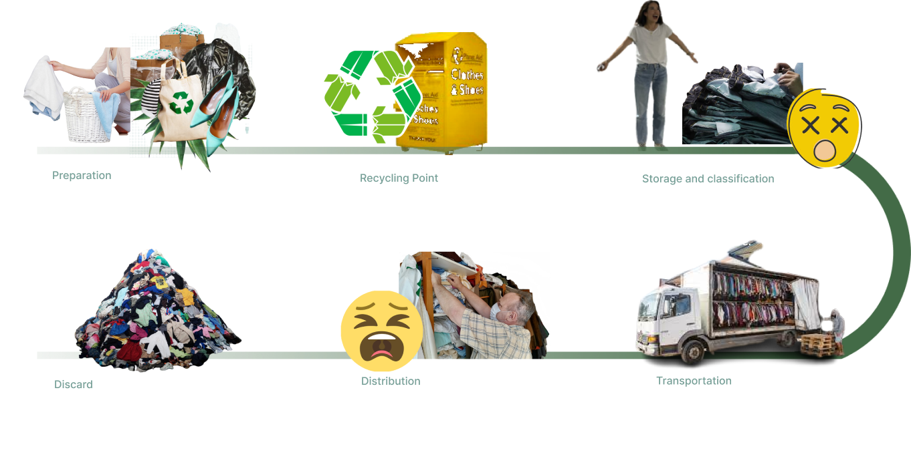

I want to create a second-hand clothing auction website to reduce resource waste and greenhouse gas emissions caused by fast fashion. I drafted a solution specifically for hoarding clothes without monetary transactions: Bidders could match certain clothing with AR and publish it on the platform. The auctioneers then select their favorite design and send the clothing to the designer.